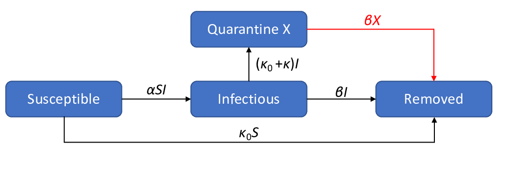
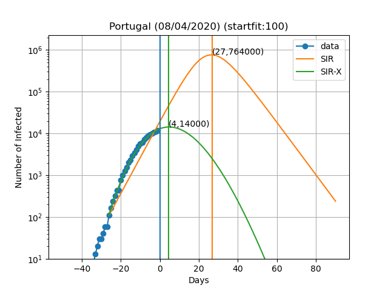

Published: Mon 06 April 2020
With respect to the ongoing coronavirus pandemic, a lot as has been said about imposing quarantine and social distancing measures to "flatten the curve". The curve refers to the number of people infected with the COVID-19 disease every day.
Since the real number of infected people is unknown, using the number of confirmed infections to predict how the disease will spread, thus the curve growth, is the best approximation we have.
So how does this curve look like at the moment? Can we predict how it will look in the future?
One way to do this is use epidemiological compartmental models, such as the SIR model. This model compartments the total number of individuals in three boxes: (S)usceptible to infection, (I)nfected and (R)emoved; and uses some constants to model how many people move between these compartments. The model can be summarized in the following figure.
For a more detailed explanation about the SIR model, you can read the Wikipedia page here
The SIR model for the ongoing corona virus outbreak tends to overestimate the number of infected over time. That is because this model does not account for the effects of quarantine. It doesn't need to be a generalized quarantine, as long as the people that are known to be infected are isolated from the rest of the population. Hence the moto of the WHO to "Test, test and test" for if you test you can isolate the infected and reduce the spread of the disease.
A model that accounts for the quarantine is represented schematically in the following figure.

Where X is the number of people put in quaratine after being infected.
I first read about this model here . I modified it slightly by adding the connection in red (I will explain the reason below).
They provide their own fit to the number of confirmed cases, using the data from the Johns Hopkins University available here .
I wanted to plot the curves of infected people beyond the point where it is shown in their fits so I did my own python implementation of the SIR-X model.
Here are the plots and fits for some countries:

The vertical blue curve represents the day in the title of the graph.
The blue dots are obtained by subtracting the number of recovered to the number of confirmed cases.
In the SIR-X model the number of infected is obtained by adding X and I provided that the modification in red is present.
The green and orange vertical lines represent the day in which the maximum number of infected people is observed according to the model as well as the number of infected people on that day (Day,Max. infeced).
The final result depends very sensively on the day at which you start to solve the differential equations (startfit). I choose different days for the different countries.
The code to generate these graphs is available here
WARNING: I am by no means a specialist in these type of models or how to solve them. This data is meant for illustrative purposes only. I cannot exclude the possibility of a systematic error in the scripts and all the results shown here being wrong. If you do find such error please let me know so I can fix it.
The real experts dont't risk making predictions of more than 7 days and the reason is that predictions tend to be wrong as time passes. In this work I fit all the variables of the model simultaneously, while the original authors fit only the new variables introduced in the SIR-X model with respect to the SIR.
I would like to thank jmpcm for giving feedback on this text.